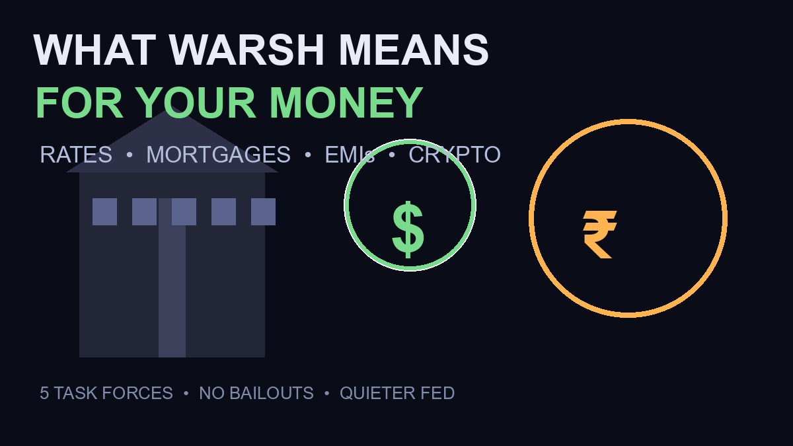

What Fed Chair Kevin Warsh Means for Your Money: Rates, Mortgages, EMIs and Crypto

Every Fed chair reshapes how money costs — and Kevin Warsh is already reshaping it differently. Since taking office in May 2026 as the 17th Fed chair, he has launched five task forces to re-examine how the Fed works, told lawmakers the Fed is “not in the bailout business” for crypto, and delivered a first Jackson Hole keynote that warned markets to stop expecting rescue. If you have a home loan, an EMI, savings — or Bitcoin — here’s the plain-English guide to what changes under Warsh.
Quick Answer: The Warsh Doctrine in Five Lines
- Do less, signal less: he wants a “quieter Fed” that surprises markets rather than guiding them — forward guidance “has overstayed its welcome”
- Prices first: his stated “predominant focus” is inflation — the 2% target is “a firm, fixed target” in his words
- Smaller Fed: a balance-sheet review could shrink the Fed’s footprint — which is why mortgage rates may stay higher even if the policy rate falls
- No bailouts: for crypto and stablecoins, explicitly “not in the bailout business” — market discipline is the policy
- Five task forces: communications, balance sheet, data, productivity & jobs, and inflation framework — the whole operating model is under review (Brookings, Fed.gov)
Rate Cuts: The Warsh Bar Is Higher
His first Jackson Hole keynote made it plain: with the Fed’s preferred PCE price index running at 3.7% year-over-year, the “predominant focus” is prices — not rescuing risk assets. After the speech, markets shifted: September rate-hike odds rose to ~55% (Guardian, tracking post-speech pricing) with over 70% odds of a hike by December. Translation for your money: don’t plan on cheap borrowing this year. Deposits look better; floating-rate loans look heavier.
Tracking the odds: after his Jackson Hole keynote, markets moved September hike pricing from ~35% toward ~60% — with gold and Bitcoin sinking together. That’s the doctrine in action.
Mortgages and EMIs: The Hidden Warsh Effect
Here’s the part most coverage misses: Warsh prefers a smaller Fed balance sheet. The balance-sheet task force is reviewing quantitative easing’s role and the Fed’s long-run footprint — and mortgage rates price off long-term bonds, not the overnight rate. A shrinking Fed balance sheet means less demand for long bonds, which means mortgage rates can stay elevated (or rise) even if the Fed cuts short rates. For Indian readers with USD-linked loans or NRI home loans, and for US readers refinancing: the 30-year Treasury hitting its highest level since 2007 during Warsh’s own speech is the signal — long money is expensive and staying that way under this doctrine.
Crypto: Tolerated as Discipline, Never Rescued
Warsh has a long history with crypto — his 2022 essay famously called Bitcoin a “very good policeman for policy” that disciplines central banks. But his Fed’s stance is now codified: no bailouts for crypto or stablecoin failures. His first keynote’s prepared remarks contained zero explicit crypto mentions — the innovation focus was AI infrastructure. For crypto holders this is a paradox worth understanding: a Fed that treats crypto as market discipline rather than a protected asset class is structurally respectful but tactically indifferent. No crackdowns — but also no safety net. Stablecoin growth (Tether and USDC buying Treasuries) is, per CryptoSlate, his Fed’s “next policy problem” — expect frameworks, not favoritism.
The Five Task Forces: Why They Matter for Everyone
Communications (the “quieter Fed”), balance-sheet policy, data, productivity & jobs, and the inflation framework — each task force can move markets when it reports. The balance-sheet review (CEI calls it “the most important of the five”) determines whether the Fed keeps absorbing government debt — which is the plumbing behind mortgage rates, EMIs, and the liquidity that drives crypto cycles. Watch these, not just FOMC days.
Frequently Asked Questions
Who is Kevin Warsh?
Kevin Warsh became the 17th Chair of the Federal Reserve in May 2026. He’s a former Fed governor (2006–2011), Stanford lecturer, and a longtime critic of the Fed’s expanded footprint — now running five task forces to review the Fed’s communications, balance sheet, data, productivity framework, and inflation policy.
Will mortgage rates fall under Warsh?
Not necessarily — and possibly the opposite. Warsh prefers a smaller Fed balance sheet, and mortgage rates price off long-term bonds. If the Fed reduces its Treasury holdings, long rates (and mortgage rates) can stay elevated even if short-term rates are cut. The 30-year Treasury yield hit its highest level since 2007 during his August 28 speech.
What does Warsh mean for crypto and stablecoins?
He has told lawmakers the Fed is “not in the bailout business” for crypto or stablecoins. His view of Bitcoin as a “very good policeman for policy” means tolerance without protection: no crackdowns announced, but no rescue either. Stablecoin growth is on his Fed’s policy radar as a growing Treasury-market force.
Will the Fed cut rates in September 2026?
After Warsh’s Jackson Hole keynote, markets shifted toward pricing a hike: roughly 55% odds for September and over 70% by December, per post-speech tracking. With PCE inflation at 3.7%, the Warsh Fed’s focus is prices first — cuts require inflation progress, not market hope.
Sources
- Federal Reserve — Chairman’s Task Forces (official)
- Brookings — the five task forces explained
- Federal Reserve — Warsh Jackson Hole keynote transcript
- CEI — balance-sheet task force analysis
- Guardian — 55% September hike odds post-speech
- CryptoSlate — stablecoin growth as the Fed’s “next policy problem”